权限组件管理
功能描述
根据对用户或角色配置的权限的不同，控制HTML资源中某些控件的显示或隐藏。
功能使用流程
资源定义
首先进入 系统管理/功能管理/资源管理界面，选中需要权限控制的HTML资源，点击权限组件编辑，如下图：
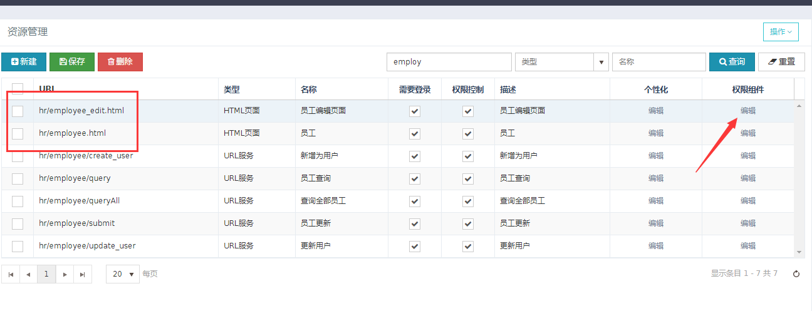
在权限组件编辑中，定义界面中需要控制的组件，定义了组件之后，点击相应组件的编辑，定义组件的元素
如下图：

权限组件属性:
组件类型：组件所属的类型，共有四种，分别为服务端变量、表格、表单和按钮组。
组件标识：组件在页面中的唯一标识，通常为组件的ID。
组件名称：组件的名称。
权限组件元素属性
类型：组件中元素的类型。
属性： 由类型带出，不可编辑，表示元素的标识，有id，className,name等。
属性值： 元素的标识的具体值，如id="save"，class="edit",field="gender"等。
名称：元素的名称。
权限组件（表格）
主要控制表格中的元素，首先需要定义表格的组件标识，与界面中表格的ID相同
表格中的元素主要分为三种类型：
工具栏按钮：表格中的toolbar，表格上方的按钮。
表格列按钮：表格列中的按钮。
表格列： 表格中的列。
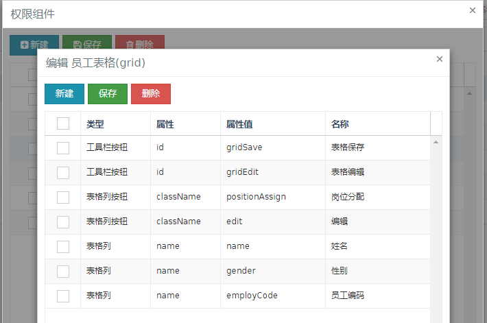

权限组件（表单）
主要控制表单中的元素，首先需要定义表单的组件标识，与界面中表单的ID相同
表单中的元素主要分为两种类型：
字段：表单中的字段，比如邮件输入框。
按钮：表单中的按钮，比如保存按钮。
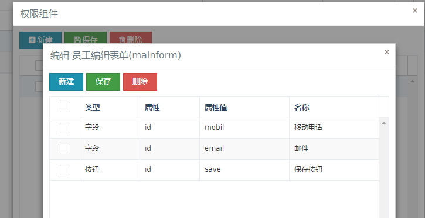
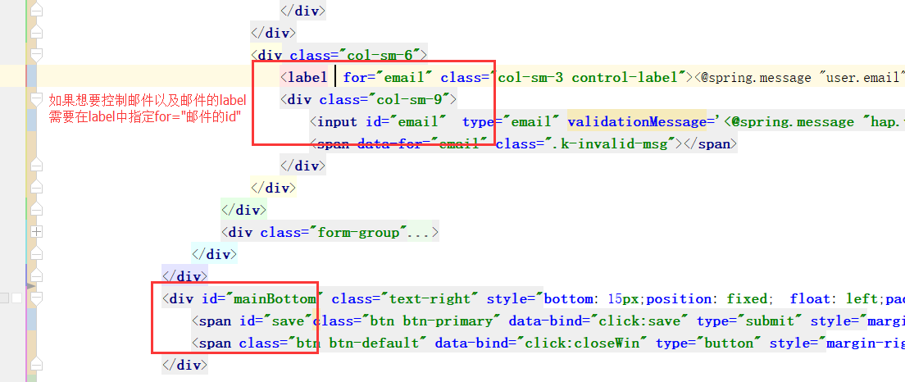
权限组件（按钮组）
主要是为了区分是表单的按钮，还是表单外的按钮，所以单独定义了一个按钮组类型
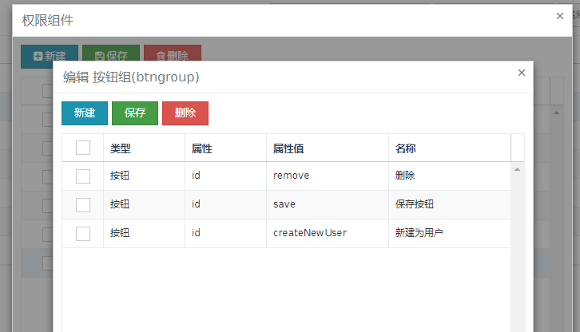
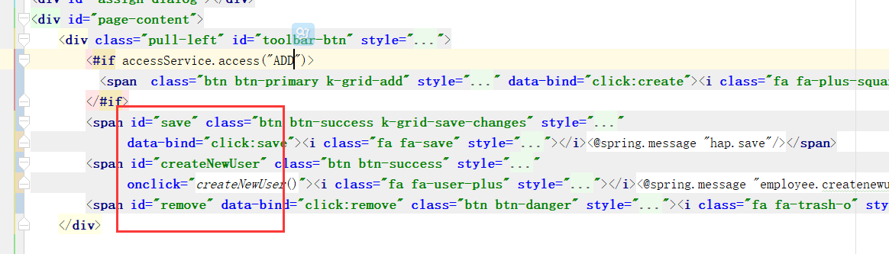
权限组件（服务端变量）
在以前的版本中，通过在权限组件中定义一个唯一的组件标识（必须与HTML想要控制的控件的判断标识相同）
在界面中通过freemaker获取服务端传递过来的组件授权信息，进行组件的控制。
为了兼容以前的版本，所以提供了一个服务端变量的组件类型。

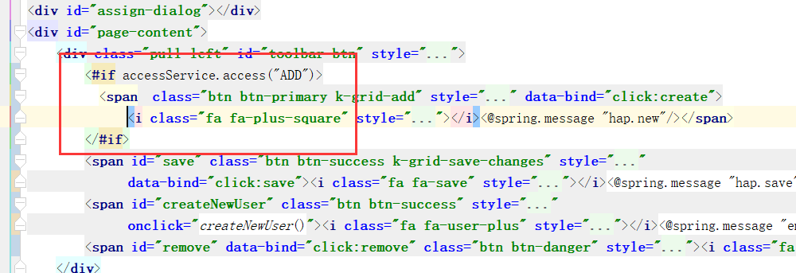
权限设置
角色权限设置
入口为系统管理/功能管理/功能分配
首先需要选择相应的角色，点击权限设置，然后为该角色设置相应的组件权限，点击保存，即完成角色权限设置。 如下图：

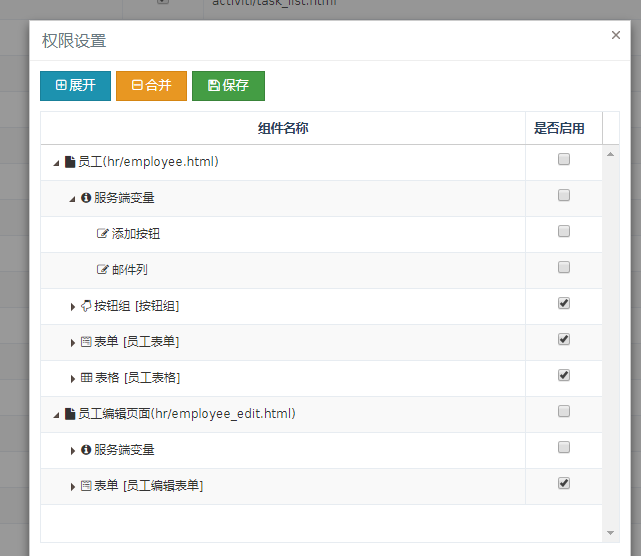
注意事项
如果组件类型是服务端变量，权限设置时，默认是没有启用的。
如果是其他组件类型，权限设置时，默认是启用的。
不支持对同一页面属于多个功能的情况 进行权限设置， 如订单页面，可能会有多个功能会共用这个页 面，在某一个功能中设置了订单页面的权限，则会导致所有功能都是同样的权限。 暂时的解决方案是新建一个页面，将共有的页面include进去，然后进行配置。
如果用户登录时，开启了角色合并，则相应的组件权限将合并。其中服务端变量类型不支持角色合并。 合并的规则是，角色拥有相同功能的，进行组件权限合并，只要其中一个角色拥有组件权限，则表示启用。
用户权限设置
入口为系统管理/账户管理/用户管理
首先需要选择相应的用户，点击权限设置，此时会有一个功能菜单，
该功能菜单是登录用户所拥有的所有角色合并后的菜单
选择相应的功能菜单，点击设置，为该用户设置相应的组件权限，点击保存，即完成用户权限设置。
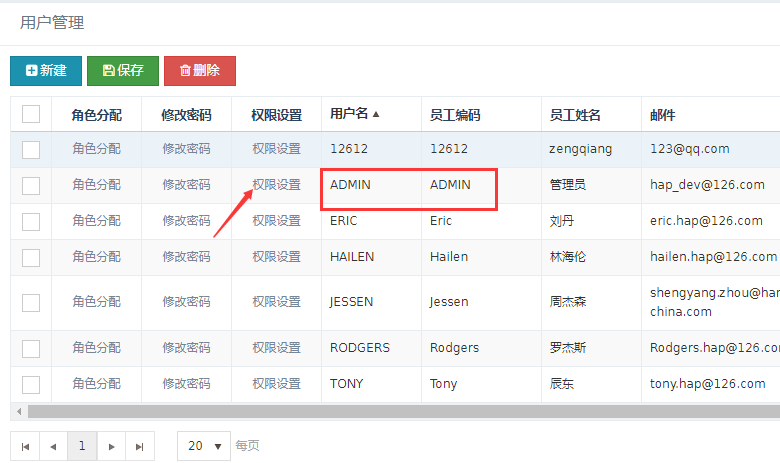
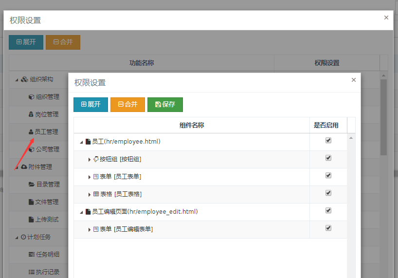
注意事项
用户权限不支持配置服务端变量。
如果当前用户所拥有的角色已经分配了组件权限，而用户又单独配置了一次，则以用户设置的为主。
示例：
原界面
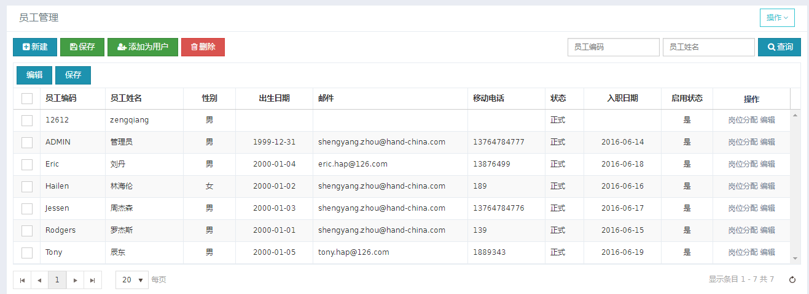
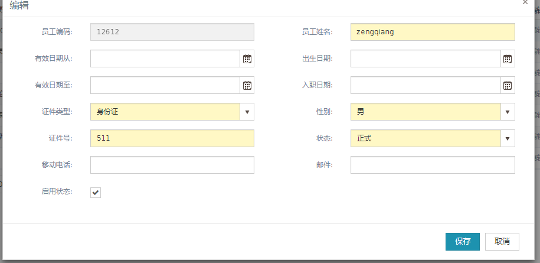
权限分配后
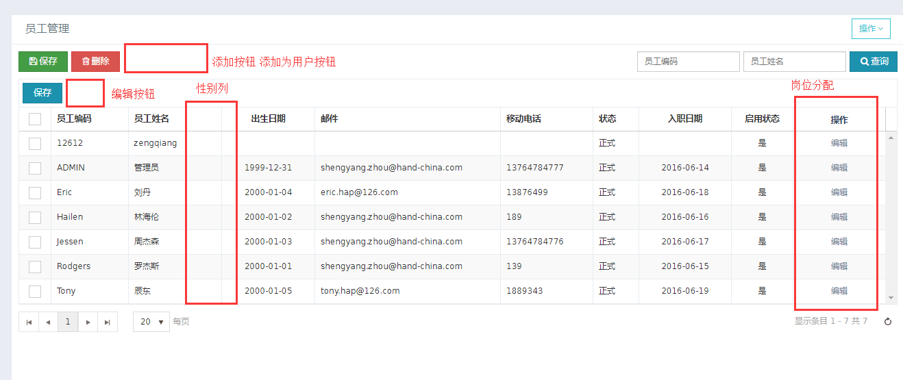
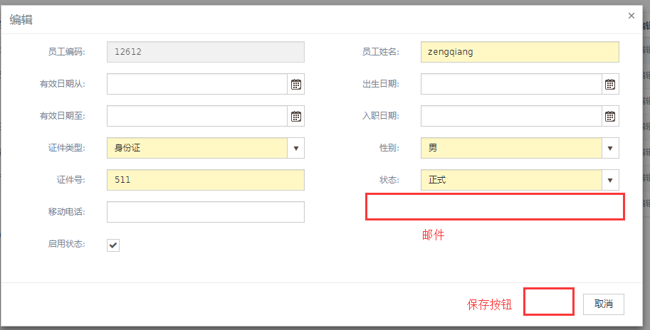